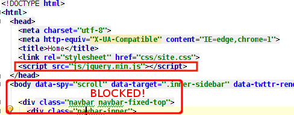

The Tools
- YSLow / PageSpeed
- WebPageTest GMetrix Monotis Pingdom SitePerf Pagespeed Insights-Critical path
- Cuzzilion / DelayMe
- chrome://net-internals
- BrowserScope
- CanIUse
- ZoomPF Free
- boomerang

- Reduce RTT and data exchanged on the wire -Use Keep-Alive header to reuse connections(default for Http 1.1) -Use a CDN -Minify resources and apply compression
- Minimize number of requests Browsers are limited to 6 concurrent connections per host name -Merge resources - JS, CSS and Sprites for images -Use Data-URIs
- Try to make more simultaneous requests -JS and CSS files at the head block rendering Arrange the request flow so that requests do not block and serialize
- Progressive enhancement Determine a set of "critical path" resources that are required for rendering the page in a seeming usable state for the user Improve user experience by downloading in "the background" additional JS, resources for functionality as the user decides what to do next.
- Cache is king "Fastest web request is the one not made"
Use a CDN

- Faster connections and downloads - reduced latency
- Domain sharding - more concurrent connections
- Reduced load on own servers
$ dig js.web.de js.web.de. CNAME js.web.de.edgekey.net. js.web.de.edgekey.net CNAME e5416.g.akamaiedge.net. e5416.g.akamaiedge.net. A 2.16.109.234

How do they work?
- CNAME is an alias
- Use GeoIp to check supplied A record
- Google Public DNS used to make CDNs missperform
Common misconception that CDNs only act as a mirroring server
They can act as a Reverse Proxy - Custom Origin(CloudFront)

- Domain sharding: Split statics to multiple CDNs js.web.de, css.web.de, img.web.de - further => img1.web.de (+) Max concurrent connections for resource retrieval increase (-) Relative referencing no longer works : `background-image:url('../img/paper.gif');` Solution: Using placeholders that are replaced at build time: `background-image:url('${img_cdn}/paper.gif');` (-) Additional DNS lookups to resolve subdomains
- Most famous JS libraries have already known CDN locations to use Using those may mean that the library it's already in cache when a user comes for the first time Checkout cndjs to add DON'T use GitHub references: http://bartaz.github.com/impress.js/js/impress.js They don't set any caching headers.
JS and CSS merging and minification
- Reason behind merging of JS and CSS resources is related to making fewer requests
- Older browsers used to serialize downloads of JS resources They wanted to prevent unnecessary downloading of resources - eventual document.write("<!--")
- No longer true for more recent browsers(IE8 included)

Minification
- Removes spaces and comments, renames function and variable names
- You'd expect the same result with gzipping the JS/CSS resource - actually it's a 5-10% more decrease in size
- Wide selection of tools for minification Uglify.js, Google Closure, YUIMin, Jawr for CSS, etc - check what works for you
- Use wro4j Has all the above mentioned options for minifying and merging plus other useful plugins
wro4j - Web Resource Optimization for Java
Brings the concept of "groups of resources"
Groups can be defined in a wro4j.xml file
<groups xmlns="http://www.isdc.ro/wro">
<group name="core">
<js>/js/views/app-view.js</js>
<js>/js/views/file-browser-view.js</js>
<js>/js/models/*.js</js>
<js>classpath:com/mysite/resource/js/1.js</js>
<css>classpath:com/mysite/resource/css/1.css</css>
<group-ref>plugins</group-ref>
</group>
<group name="plugins">
<js>/js/plugins/jquery.modal.js</js>
<js>/js/plugins/jquery.progressbar.js</js>
</group>
</groups>
<html>
<head>
<title>Wro Test</title>
<link rel="stylesheet" type="text/css"
href="/wro/core.css" />
<script type="text/javascript"
src="/wro/core.js"></script>
</head>
<body>
//Body
</body>
</html>
- Run at build time Maven plugin to execute build step Command line java -jar wro4j-runner-1.4.5-jar-with-dependencies.jar
- At runtime Servlet filter to add to web.xml that applies per request the grouping and processors
-
Pre/Post "Processors"
Set of plugins that alter the file before or after the merging into groups Defined in wro.propertiespreProcessors=lessCss,cssDataUri,placeholderProcessor postProcessors=jsMin,cssMinJawr - Minifiers JSMin, UglifyJs, yuiJs, yuiCss, JawrCss, etc.
- LESS Processor You can also include .less files as group resources and it will trigger less.js to parse those files into .css
-
Base64DataUriSupport
This processor looks for 'background-image' and if the referenced image is less than 32KB(IE8 limit for data-uris) transform it do data-uri .
- PlaceholderProcessor. Replace ${var_name} with actual values in the resources
- JSLint and CSSLint. Static analysis - "Findbugs" for JS and CSS
Compressing text on the wire
- Browser and Server negotiate on the compression protocol that will be used to exchange information with each request.
-
Browser negotiate the possible communication by sending a header in the request:Accept-Encoding: gzip, deflate, sdchServer responds with the compressed content plus the headerContent-Encoding: gzip
- Not only text can be compressed, .ico and web fonts. Good text candidates .xml, .rss, json content type
- Should not set it for resources that are already compressed like .png or .gif, .jpeg
- Best use the .htaccess file from the HTML5 Boilerplate project as example
Browser Caching
There are several headers that specify how the resources get cached
- Expires Sun, 14 Jan 2014 08:23:12 GMT and Cache-Control: max-age=3600 are "hard" cache directives - When the browser encounters one of those headers it will cache the resource and for the time specified will consider it fresh and will not try to revalidate and download by issuing other GET request to the server. - It's redundant to set both Expires and Cache-Control, because Cache-Control always takes precedence over the other

- Last-Modified and ETag are "soft" caching helpers The browser may issue GET requests to the server to check if the resource has been changed on the server.
-
Last-Modified:Sun, 19 Jun 2011 06:59:22 GMT
1. If the resource's valid period had expired browser may issue GET requests with If-Modified-Since header
2. Server may just return an empty response content body but with 304 Not Modified status

-
ETag:"bc10321a2179"
Is a programatically generated value to mean an unique identifier for a resource, a fingerprint or version
Same logic, only the server has to respond to a check request header If-None-Matchif there is a new version of the resource

- Problem with ETag The value may be different for the same resources if the request lands on different servers For Apache one can configure FileETag none in the .htaccess file
- Browser can set both If-Modified-Since and If-None-Match to check validity
- Apparent conflict 1. We are advised to set Far Future Expiration dates like months for js, css 2. We want the users to see immediately a new version(fix) of a script / css quickly not wait for a week / month
-
Solution: Reference the cacheable resource along with some kind of version token in a file that is not cached (the .html) file
- - Timestamp of files <script type="text/javascript" src="/js/site-B0439F858745C84EA46792F9AC42B6CF.js"></script>
- - Specific file version <script type="text/javascript" src="/js/site.js?ver=1.23"></script>
- - Application version <script type="text/javascript" src="/2.14/js/site.js"></script>
- Apache config
-
To enable browser caching we are enabling in Apache the mod_expires module
ExpiresActive on ExpiresByType text/css "access plus 1 year" ExpiresByType application/javascript "access plus 1 year" - This only updates the cache related headers in the browser Does not mean we've turned the Apache frontend into a Caching Reverse Proxy
Caching reverse proxy

- Apache mod_cache no longer experimental since 2.2
- Uses the Cache Control and Expires header to know when to request again
- Varnish Cache - more configurable can sit in front of the Apache
- Nginx - also has the possibility to cache proxy requests
JS behaves like a Primadona! When browsers encounter a <script> tag they block until they finish downloading and execute the script

- The page seems unresponsive to the user during this time If the script is in the <head> section nothing will render The rendering process is interrupted
- Why block and not continue? Browser cannot begin executing bellow scripts(even if they finished downloading before the blocking one) because they might rely on code being available. Think of your libraries that are dependent on JQuery
- What can Browsers do? - Only look ahead and start downloading(but NOT executing) following scripts. - Remember older browsers didn't even do that.
What can we do?
- Move scripts to page bottom Prevent render blocking by moving the script as down in the page as possible => bottom script (+) User will see the page render (-) User interactions with "active" components will not work until dependant js script is downloaded and executed
- Look for and remove 404s when referencing external JS files
- Look for empty JS files They'll block needlessly until response comes
Your script killed my site - Beware of SPOFs from 3rd party scripts
- Make the scripts not blocking, make them async HTML5 introduced the <script async="async"> attribute. See CanIUse for support(<IE10 don't) When async script is encountered, browser begins downloading and executes it as soon as available
- With async you don't get any guarantees about order of execution Can't assume that one async script will load before another async script. 3rd Party scripts on which you don't depend are ideal candidates: GA, Facebook, Tweeter, LinkedIn libraries You fire the requests in parallel and there is no blocking.
- DOMContentLoaded event aka $.ready() happens faster Because it does not wait for JS to download and execute Your script is not delayed by any other 3rd party slow response
- Don't use document.write() in scripts
Dynamic Script Tag Injection because IE<10 does not support async
var sNew = document.createElement("script");
sNew.async = true; //does not mean that when we set to false
sNew.src = "http://ajax.googleapis.com/ajax/libs/jquery/1.8.2/jquery.min.js";
var s0 = document.getElementsByTagName('script')[0];
s0.parentNode.insertBefore(sNew, s0);
- Advantage when keeping the scripts at the <head> The browser can begin downloading the script early
- What about if you'd want to execute a callback when the async script finishes loading? You can listen for the onload event on the script. For IE this is onreadystatechanged
- What if you also have dependent libraries? JQuery << Bootstrap.js << inline script Things get messy and we need to resort to a specialized async loader - there are quite a bunch of them Is it worth the additional of another js library?
Async vs Deffered
IE also had from a long time the defer attribute for scripts
<script defer="defer" src="http://ajax.googleapis.com/.../jquery.min.js">
- Like async when a defer script is encountered the parsing and rendering does not block
- Execution is deferred until the DOM is constructed
- Execution order of scripts is preserved so scripts block one another but not page rendering
- Transfer-Encoding: Chuncked for slow response servers
Load non visible / non essential images at a later time
- Think of Gravatar, Disqus user images, carroussel other non essential
- The browser does not know that images are not visible and will try to download them when <img src="photo.jpg"> encountered
<img src="placeholder.png" data-original="tiger.jpg"> <noscript><img src="tiger.jpg"></noscript>
function deferredImageLoading() {
$('img[data-src]').each(function() {
$(this).attr('src', $(this).attr('data-src'));
});
}
SPDY or HTML2.0
- Compressed Headers Currently -in HTTP- the headers are sent uncompressed
- Multiplexing resources on a single connection Single long lasting connection to the server without the need to "warm up" to a high bandwidth We need to do the opposite of domain sharding
- Server Push
- Preemptive resource loading